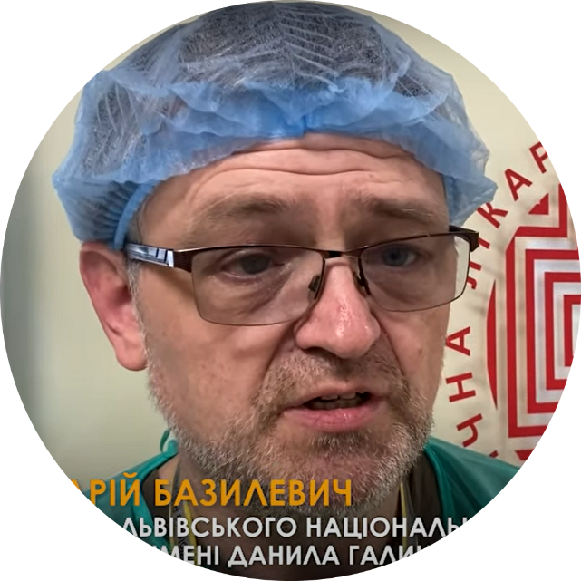
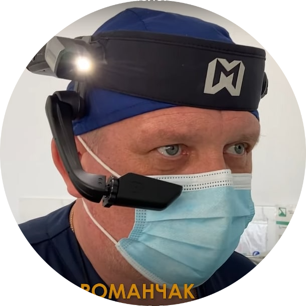

Роман Грузин
Лікар-травматолог
Наразі плануються електронні лікарняні листи. Які тепер будуть передаватися саме по цій системі. Багато пацієнтів, наприклад, приходять з дослідженням МРТ стислим, і подивитися умови я не можу. Тому покращується якість обслуговування пацієнтів. Ну і відповідно я можу роздрукувати необхідні моменти. Не потрібно людям бігати і шукати, де можна роздрукувати якісь свої рекомендації.

